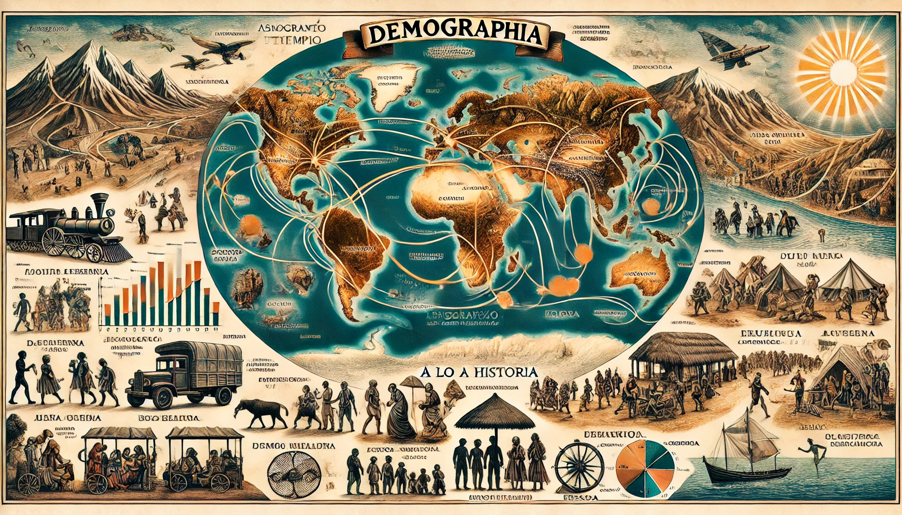

Rutas por Tema

La geografía económica
- Ramas de especialización de la geografía económica
- Ciencias auxiliares de la geografía económica

La actividad económica
- La organización de la actividad económica
- Los factores de producción
- Sectores de la economía

La globalización
- La globalización como proceso
- La economía global
- Los Estados en sistema mundial

Colombia
- Relieve El sistema montañoso centralLos sistemas montañosos periféricos
La hidrografía
Las regiones naturales de Colombia
El clima en Colombia
La población colombiana
Componentes territoriales
- Las entidades territoriales Distritos
Departamentos (ETIS)
Municipios
Economía colombiana
- La agricultura La ganadería
La minería La industria
El sector servicios
El sector cuaternario en Colombia
Desarrollo económico y conflictos sociales
- Problemas asociados a la tenencia de la tierra
Crisis y recuperación de la industria
La pobreza